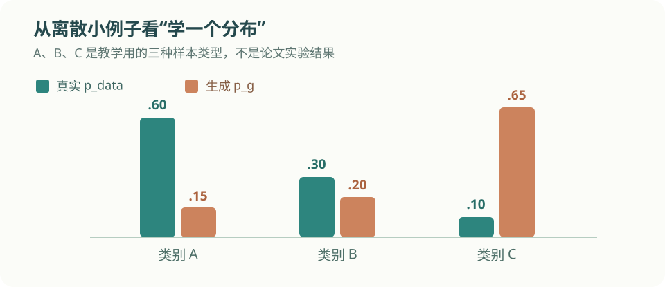
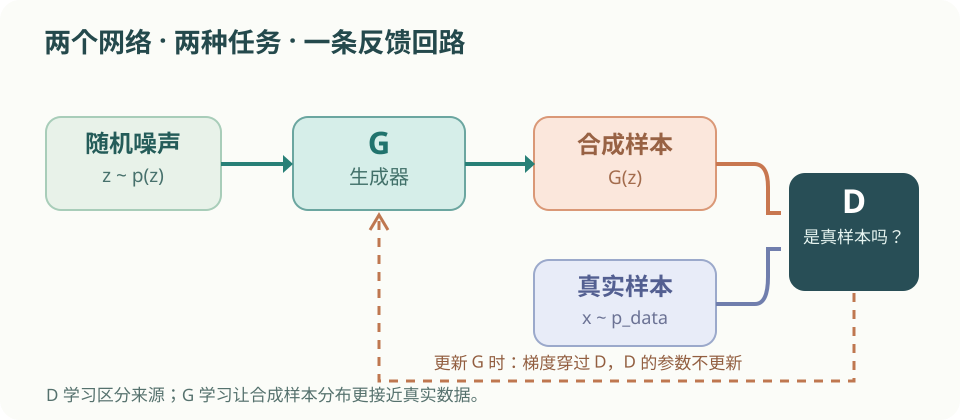
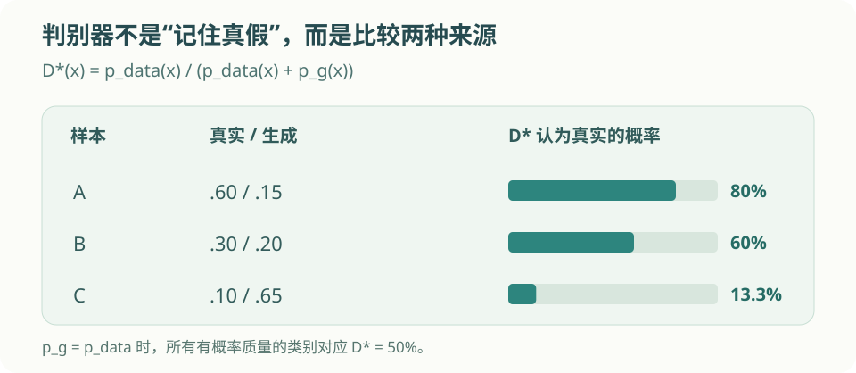
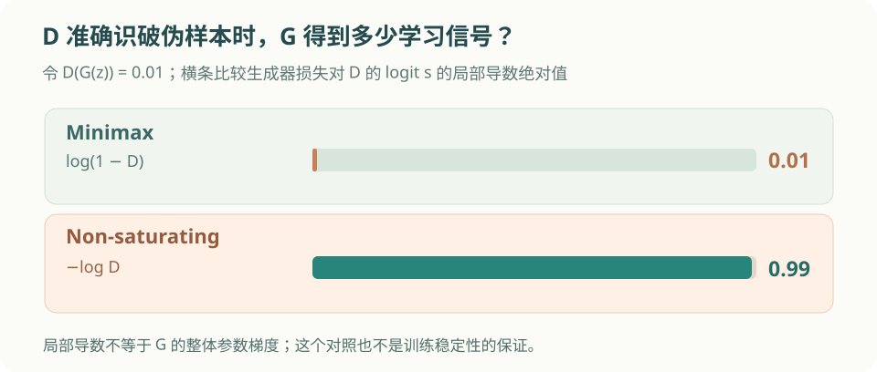

Understanding GAN
为什么让一个网络造假、另一个网络辨假，反而能学到真实数据的分布？从三类别小游戏进入 GAN 的两人博弈。
一句话先理解：GAN 不要求直接算出生成样本的概率密度，而让生成器根据判别器的反馈调整其输出分布，争取让真实与生成样本越来越难区分。
01生成模型究竟在学什么？
给你许多猫的照片，让模型产生一张训练集中没有出现过、却看起来像猫的新图像。我们要学的不是“猫 / 非猫”的分类边界，而是数据可能长什么样的整体规律。
抽象成一个最小的三类别问题：真实世界中 A、B、C 的出现概率分别为 60%、30%、10%。最初的生成器却让 C 占了 65%。即使它能画出“样本”，其出现频率也明显不对。生成建模要改变样本出现的分布。

传统显式密度模型（例如 GMM）通常尝试写出可计算的概率密度；GAN 通过生成样本与一个判别器的反馈学习，不要求直接计算生成分布在某个样本处的可解析密度。
02G 与 D：两个网络怎样相互教会对方？
生成器 G把噪声向量 z（如来自正态分布）变成一个样本 x̃ = G(z)。噪声不是标签，而是给 G 的不同输入；判别器 D读入样本 x，输出其来自真实数据而非生成器的概率估计，值在 0 到 1 之间。

真样本希望打高分（接近 1）；G 产生的样本希望打低分（接近 0）。
改变 G 的输出，让 D 更愿意把生成样本当成真实样本。
不要把 D 理解为永远可靠的“质量评分器”：它只能相对于当前数据和当前生成器学习区分。D 的准确率接近 50% 可能意味着双方接近平衡，也可能仅仅因为 D 欠拟合。
03一条公式，把双方的目标放在一起
2014 年 Goodfellow 等人的论文将双方写成一个 minimax（极小极大）博弈：D 尽量增大下式，G 尽量减小它。
第一项看真实 x：D(x) 越接近 1，log D(x) 越大。第二项看由 z 生成的假样本：D(G(z)) 越接近 0，log(1 − D(G(z))) 越大。两项都照顾到的 D 才算好判别器。
变量必须区分：pdata 是真实数据分布；pz 是事先指定的噪声分布；pg 是把噪声经 G 变换后所得到的生成分布；D(x) 是判别器对 x 的输出，而非真实数据的概率密度。
04为什么最优判别器是一个比值？
先假设 G 暂时不变，且 D 有足够表达能力。对于某个固定的样本位置 x，D 要最大化 a log d + b log(1 − d)，其中 a = pdata(x)、b = pg(x)、d = D(x)。对 d 求导并令它为零，就有 a/d − b/(1−d) = 0。
例如类别 A 的真实概率是 0.60，生成概率是 0.15，于是 D*(A) = 0.60 / 0.75 = 80%。B 为 60%；C 仅约 13.3%。这不是模型实测精度，而是给定两个分布后推出来的理想最优值。

05互动：移动生成分布，观察 D* 如何改变
现在让生成概率从起点 q = (0.15, 0.20, 0.65) 缓慢靠近真实分布 p = (0.60, 0.30, 0.10)。设置 t ∈ [0,1]，使 pg(t) = (1−t)q + tp。这是人为设计的插值轨迹，不是 GAN 真实训练算法或训练结果。
青色为真实数据概率，赭色为生成器概率。D* 是理论最佳判别器，不是一次实际训练。
| 类别 | 真实 p | 生成 pg | 两种概率（青 / 橙） | D* 判真 |
|---|---|---|---|---|
| A | 0.60 | 0.15 | 80.0% | |
| B | 0.30 | 0.20 | 60.0% | |
| C | 0.10 | 0.65 | 13.3% |
JSD(p ‖ p_g) = 0.1900 nats；max_D V(G,D) = −1.0063。生成分布还不匹配。
把滑杆推到 100%：pg = pdata，三个类别 D* 都是 50%。这是理想解的性质，不代表现实中只要判别器准确率是 50% 就证明生成器学到了数据分布。
06GAN 的理想均衡与 Jensen–Shannon 散度
把最优 D* 代回 minimax 价值函数，可以得到 Goodfellow 等人 2014 年论文的关键结论：
JSD 是一种衡量两个概率分布差异的量，非负；只有二者相等时才为 0。令 m = (pdata + pg)/2，JSD = [KL(pdata ‖ m) + KL(pg ‖ m)] / 2。在本页互动演示里，用自然对数计算，所以单位是 nats。
D* 可利用真实与生成概率的差异；最优价值函数高于 −log 4。
D* = 1/2，JSD = 0，C(G) = −log 4 ≈ −1.3863。
这里的“全局最优”建立在无限表达能力、D 确实达到最优等理论前提之上。它不是对有限网络的非凸交替梯度训练一定收敛的保证。
07一次训练轮次中，参数到底怎样更新？
原论文 Algorithm 1 使用交替的小批量随机梯度训练：先做 k 次判别器步骤，再做 1 次生成器步骤。k 是可调的训练参数，并非定义上必须为 1。
- 抽一批真实 x 与噪声 z，得到 G(z)。
- 固定 G，更新 D，使 D(x) 大、D(G(z)) 小；在常见框架实现中，D 步对假样本使用
detach()，不更新 G。 - 重新采样噪声，固定 D 的参数，但仍通过 D 的输入梯度更新 G，让 D(G(z)) 增大。
- 重复交替步骤。训练中的 D 不等于上一节推导的 D*。
下面的现代 PyTorch 示意采用数值更稳定的 BCEWithLogitsLoss，D 输出未经过 sigmoid 的 logit；它是现代实现示例，不是 2014 年原始代码逐行复现。
# 已定义 G、D、opt_g、opt_d、real、sample_z，batch_size = real.size(0)
import torch
from torch.nn import functional as F
# 更新 D：G 的这一次前向不参与反向传播
z = sample_z(real.size(0))
fake = G(z).detach()
opt_d.zero_grad()
loss_d = F.binary_cross_entropy_with_logits(
D(real), torch.ones_like(D(real))
) + F.binary_cross_entropy_with_logits(
D(fake), torch.zeros_like(D(fake))
)
loss_d.backward()
opt_d.step()
# 更新 G：冻结 D 的权重，但保留梯度穿过 D 到达 G
for param in D.parameters():
param.requires_grad_(False)
z = sample_z(real.size(0))
fake = G(z)
pred_fake = D(fake)
loss_g = F.binary_cross_entropy_with_logits(
pred_fake, torch.ones_like(pred_fake)
)
opt_g.zero_grad()
loss_g.backward()
opt_g.step()
for param in D.parameters():
param.requires_grad_(True)与神经网络训练不同，本文的 标准库 Python 数值小实验 直接检验三类别 D*、JSD 和理论恒等式。它无需安装 torch，也不声称学出了图像。运行：python posts/architectures/gan/demo.py。
08为什么很多实现不让 G 直接最小化原式？
如果 D 已把伪样本识别得很准，D(G(z)) 接近 0，原始 minimax 中 G 所最小化的 log(1−D(G(z))) 可能提供很弱的局部梯度。2014 年论文 §3 提出改用非饱和（non-saturating）生成器目标：最大化 log D(G(z))，实现中相当于最小化 −log D(G(z))。
令 s 是 D 对伪样本输出的 logit，D = sigmoid(s)。针对同一个 s，可严格推出：minimax 损失对 s 的导数是 −D；非饱和损失对 s 的导数是 −(1−D)。假设 D = 0.01，两个局部导数的绝对值是 0.01 与 0.99。

09GAN 在实践中为什么仍然难训？
| 问题 | 实际发生了什么 | 阅读 / 调试时要看什么 |
|---|---|---|
| 模式坍塌（mode collapse） | G 只生成少数几种样本，缺少多样性。 | 同时观察覆盖度与多样性，不能只看少数漂亮样本。 |
| 双方训练不均衡 | D 或 G 相对过强，梯度可能不再有用。 | 分别记录 G、D 的损失及生成样本趋势，避免用单个准确率作结论。 |
| 理想假设未满足 | 有限网络、有限数据和有限步优化并不保证达到 D*。 | 区分理论固定点与实际非凸训练轨迹。 |
| 生成效果难评测 | 逼真度和多样性不一定同步改善。 | 分开检查样本质量、覆盖度与偏差。 |
后来出现了条件 GAN、DCGAN、WGAN 等一系列改进，但它们对条件输入、网络结构或优化目标的改变不属于原始 2014 年算法。初学 GAN 时，先弄懂二分类反馈、交替更新和分布匹配，再比较后续改进的出发点。
10原始论文与进一步阅读
- Goodfellow et al. (2014), Generative Adversarial Nets，NeurIPS 2014。重点：§3 Equation (1) 与 Algorithm 1、§4.1 Proposition 1 和 Theorem 1、§6 Discussion。
- Goodfellow et al. (2014), arXiv:1406.2661。可对照原文的符号与版本。
- Goodfellow (2016), NIPS 2016 Tutorial: Generative Adversarial Networks。适合进一步了解训练难点与后续研究。
本文交互演示的概率和图示均为独立教学构造，不能引用为原论文实验指标；关键事实与推导的位置记录在同目录 evidence.json。